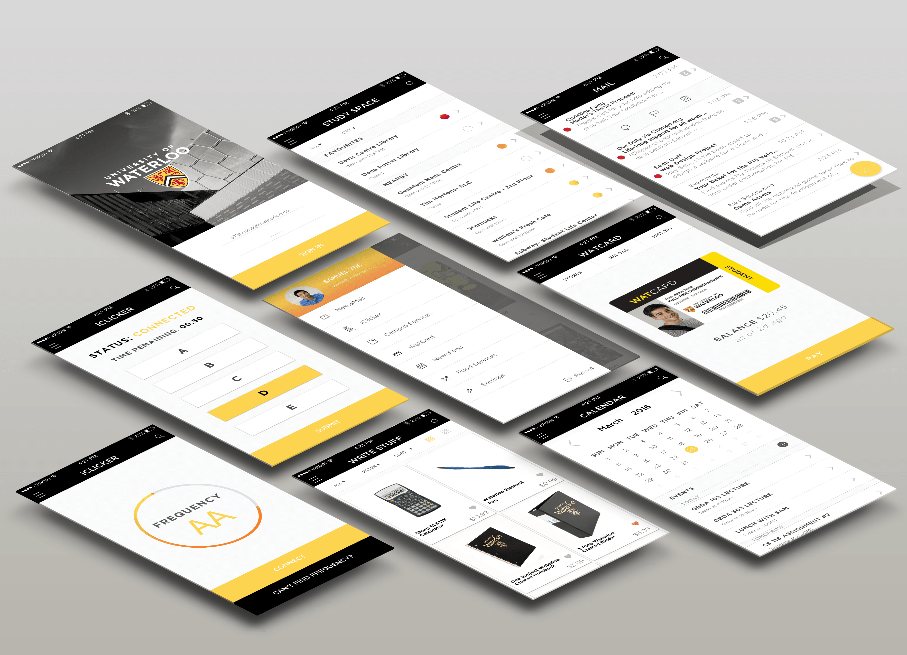

The Waterloo App is a mobile app re-design that unifies students within the university and allows them to be more productive and engaged with the campus.
Kitty Huang, Samuel Yee
I was the Lead User Interface Designer & Mobile Prototyper. My main role was to design and create the mobile app interface based off user research and feedback. After the screens were created, I made the screens into an interactive prototype.
Balsamiq, Invision, Sketch
From our personal experiences at the University of Waterloo, we noticed that the university has a lot of resources that are available for students, but these features have never been available in a fast and accesible manner.
Through user research, we found that university students valued their mailbox, calendar, and campus services. They thought those were essential to have as a student. Through further research, we also found that a mobile WATCard and StudySpaces feature would provide students great affordances. This research provided the groundwork for the development of features in our app.
Based off our conducted research, we started to ideate based off our findings. We explored the key features that we wanted to include within the app, and tried to find the most effective way to provide a seamless experience.
After ideation, we came up with an app that unified all of the university's various services and portals under one roof. This made it much easier for students to become organized and allowed the students to utilize the university's services to the fullest extent.
By creating wireframes, we were able to create our user flow and to understand the experience we wanted to design. Creating them in Balsamiq, allowed for efficient use of our time to create a low-fidelity wireframe which was used to test against our users.
To appeal to students our design resembled an innovative but familiar app experience. This way users of the old services could easily adapt to the platform while new users will be able to learn quickly.
For the design, we chose to use the official colour scheme of the University of Waterloo to give the app a sense of professionalism and familiarity as an educational platform.
The “Gotham” font again adds a sense of formality as it is the unversity's official font. The overall font, color scheme, and layout are meant to represent the University of Waterloo while creating a positive resource platform that is simple, friendly, and familiar to students. We focused more on the interface design and provided features, rather than the actual aesthetic which was adopted.
To view the prototype on Invision click the link: Waterloo App Demo